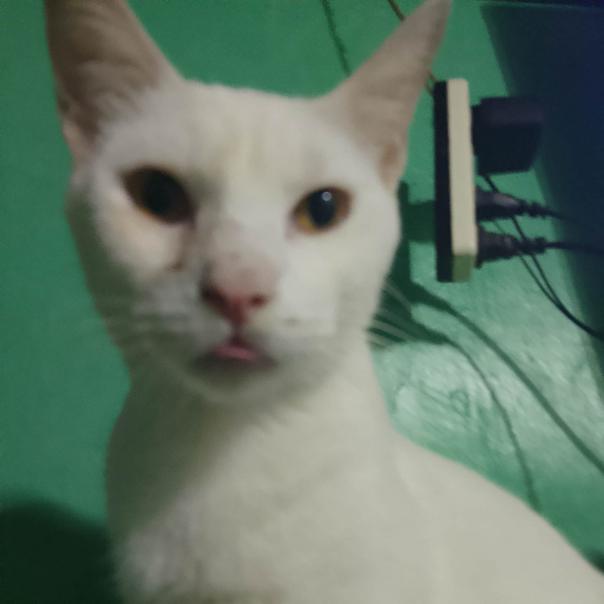
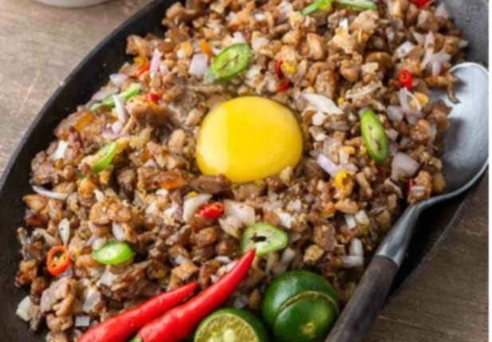
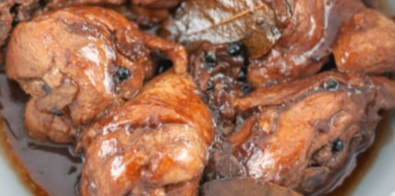
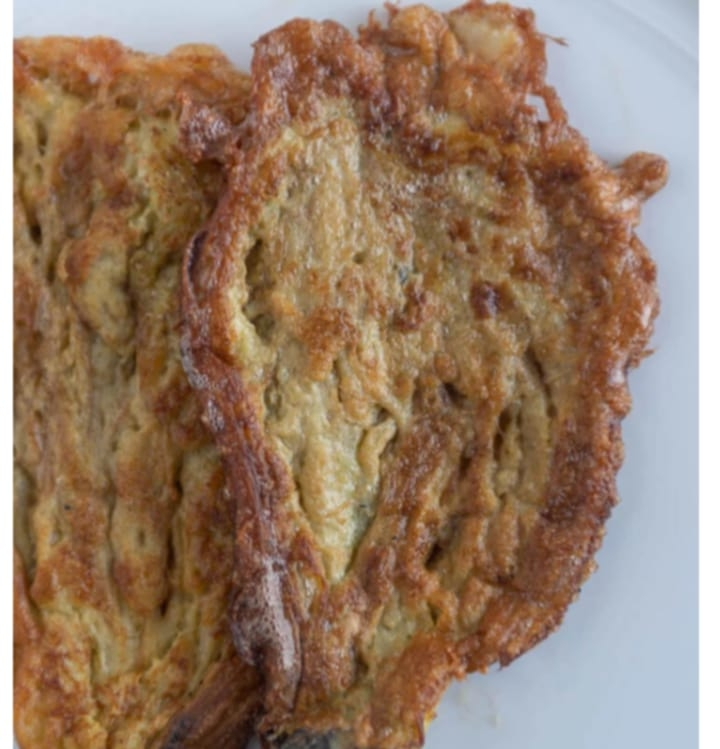
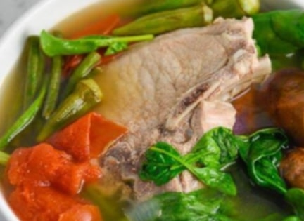
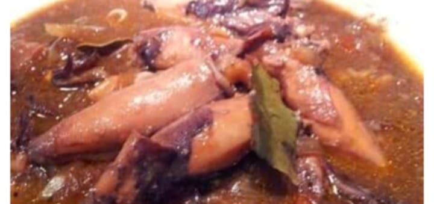
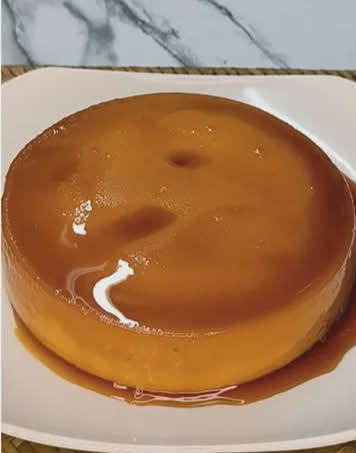
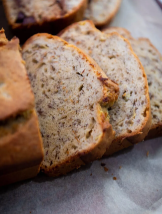

"Welcome to Cat Pawler! Traveler! Where every dishes is purr-fectly delicious! Explore our favorite recipes and start your cooking adventure today-meow!."
LumpiaIngredients: Ground pork, onions, carrots, garlic powder, parsley, sesame oil, eggs, wrappers.Instructions: Mix all filling ingredients well. Scoop 1.5 tbsp onto a wrapper, fold the sides, and roll tightly. Seal with egg wash. Deep fry in medium heat until golden brown and floating. |
|
 |
Pork SisigIngredients: Pig ears, snout, belly, ginger, bay leaves, onions.Instructions: Boil meats with ginger and bay leaves for 1 hour until tender. Grill the meat for 5 minutes per side, then chop into small bits. Toss with minced onions and dressing until well blended. |
 |
Chicken AdoboIngredients: Chicken, soy sauce, vinegar, garlic, bay leaves, peppercorns.Instructions: Marinate chicken in soy sauce and garlic for 1 hour. Pan-fry chicken for 2 minutes per side. Pour in marinade and water; boil. Add bay leaves and peppercorns; simmer for 30 mins. Add vinegar, cook 10 more mins, then finish with sugar and salt. |
 |
Tortang TalongIngredients: Chinese eggplant, eggs, salt, oil.Instructions: Grill eggplant until skin is charred black. Peel skin once cool. Flatten the eggplant with a fork. Dip in seasoned beaten eggs and fry for 3-4 minutes per side until golden. |
 |
Sinigang Pork ChopIngredients: Pork chops, okra, beans, tomato, spinach, eggplant, sinigang mix.Instructions: Boil water with tomato and onion. Add pork and simmer for 40 mins. Add sinigang mix and vegetables; cook for 12 mins. Stir in fish sauce and spinach, then let it sit covered for 5 mins before serving. |
 |
Pusit AdoboIngredients: Small squid, garlic, tomato, onion, soy sauce, vinegar, sugar.Instructions: Sauté garlic, onion, and tomato. Add water, soy sauce, and bay leaves; bring to a boil. Add squid and cook for just 1 minute. Stir in vinegar and sugar, boil again, and season with salt and pepper. |
 |
Leche FlanIngredients: 10 Egg yolks, condensed milk, evaporated milk, vanilla, sugar.Instructions: Beat yolks and mix with milks and vanilla. Caramelize sugar in a mold over low heat. Pour mixture into mold, cover with foil, and steam for 35 mins. Cool and refrigerate before serving. |
 |
Banana BreadIngredients: Ripe bananas, sugar, flour, eggs, oil, baking soda.Instructions: Mash bananas and mix with wet ingredients. Gradually stir in dry ingredients. Pour into a greased pan and bake at 350°F for about 1 hour. Cool before slicing. |
"You have reached the end of the menu. Your journey has been long, but your stomach is now full.
Take these 4 dabloons as a gift. Safe travels, friend... Meow!"
Address: 88 Pawprint Lane, Quezon City, PH
Email: contact@catpawler.com